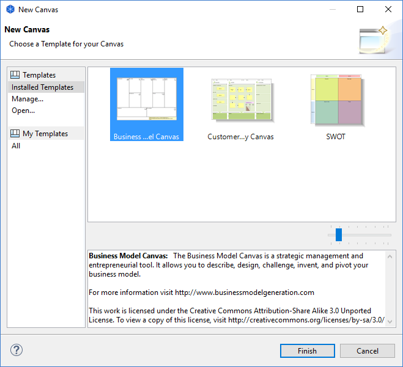
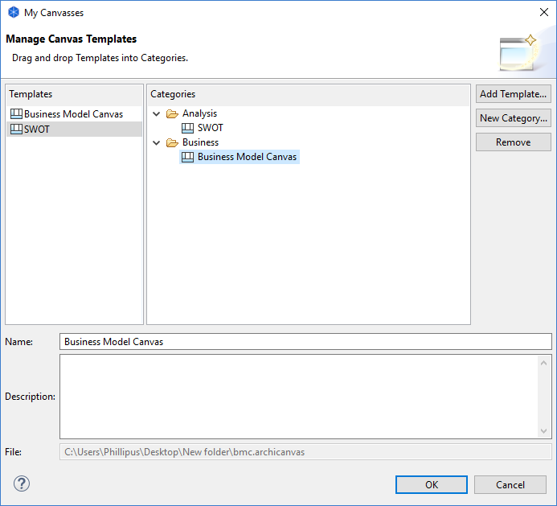

管理画布模板
您在文件系统上将Canvas模板存储为 “* .archicanvas”文件。这些信息可以存储在本地归档系统的任何地方。 Archi允许您创建指向这些模板的用户集合。这些是实际模板的快捷方式。要管理模板集请按以下步骤操作 ：
- 在模型树中选择所选模型的“视图”文件夹，右键单击它并选择“新建- >来自模板的画布...”向导将打开：

- 从向导左侧的“模板”部分选择“管理...”。将打开一个对话框窗口：

- 通过此对话框，您可以添加、重命名和删除新的模板类别，还可以将文件中的模板添加到集合中。您还可以编辑和更改每个模板的名称和描述。
- 请单击“要从文件添加模板添加模板…”按钮。从显示的文件对话框中选择 “* .archicanvas”文件。
- 要添加新的模板类别，请点击“新建类别...”按钮。提供类别的名称。
- 要将模板添加到类别，请将模板条目从“模板”表中拖放到“类别”树中的类别文件夹中。请注意，模板可以出现在多个类别文件夹中。